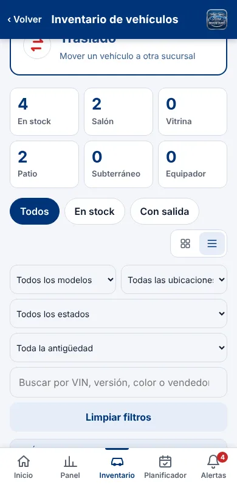

Qué puedes hacer
El perfil de solo consulta sirve para mirar sin riesgo de cambiar nada.
- Ver el inventario de tu sucursal.
- Ver las entregas y el calendario del planificador.
- Exportar lo que ves a Excel o CSV.
No puedes ingresar, editar, cambiar estados ni recibir avisos.
Entrar a la app
Abre https://nachioc.github.io/FordInventory/ en tu celular o computador.
- Escribe tu RUT y tu contraseña, y toca Entrar.
- Si es tu primera vez, toca Crear cuenta, escribe tu nombre, RUT y una contraseña. Luego elige tu sucursal y tu rol y espera la aprobación de un administrador: verás «Cuenta pendiente» hasta entonces (toca Reintentar).
- Si te dieron una clave temporal, la app te pedirá crear una nueva antes de seguir.
- Si no recuerdas tu clave, toca Olvidé mi clave o pídele al administrador que la restablezca.
El RUT debe ser válido (la app revisa el dígito verificador).
Instalarla como app
No necesitas tienda de aplicaciones: se instala desde el navegador y queda con su ícono, como cualquier app.
Android (Chrome)
Menú ⋮ → Instalar app (o «Agregar a la pantalla principal»).
iPhone (Safari)
Botón Compartir → Agregar a inicio. Es obligatorio para recibir avisos en iPhone.
Computador
Chrome, Edge o Brave: ícono de instalar al final de la barra de direcciones.
Modo claro, oscuro y vistas
En Inicio, al final, elige Claro u Oscuro. Se recuerda en ese dispositivo.
Los datos se abren siempre en modo lista (tabla) y puedes pasar a tarjetas con los botoncitos de arriba; la app recuerda tu elección. El planificador es solo un calendario.
En el celular, además de los botones del menú inferior, puedes deslizar el dedo a los lados para pasar entre Inicio, Inventario, Planificador y Alertas.
Ver el inventario
Entra por Inventario. Arriba ves cuántos autos hay en stock y cuántos hay en cada inventario (Salón, Vitrina, Patio, Subterráneo, Equipador).
- Elige En stock, Con salida o Todos.
- Filtra por modelo, ubicación, estado o antigüedad, o busca por VIN, versión, color o vendedor.
- Toca Limpiar filtros para volver a ver todo.
Antigüedad: los autos que llevan mucho tiempo sin salir muestran un chip amarillo o rojo con los días. Los umbrales los define el administrador o el jefe (por defecto 60 y 90 días).


Ver el planificador de entregas
Entra por Planificador. Las entregas se agrupan en Atrasadas, Hoy, Mañana y Próximos días. Las que vencen hoy, mañana o ya vencieron se marcan y suman al número de Alertas.
- Filtra por Activas, Entregadas o Todas, por estado, o busca por VIN, modelo o vendedor.
- Las entregas se ven en un calendario: toca un día para ver sus entregas.

Calendario
El modo calendario muestra el mes completo. Cada día con entregas lleva el número de entregas y se pinta más fuerte mientras más carga tenga (1, 2 a 3, 4 o más). Toca un día para ver sus entregas debajo; usa ‹ › para cambiar de mes y Hoy para volver.

Exportar a Excel o CSV
Al final del Inventario y del Planificador hay dos botones: Exportar CSV y Exportar Excel.
- Se exporta lo que estás viendo: respeta los filtros, la búsqueda y la sucursal elegida.
- El inventario incluye la columna Días en inventario.
- El Excel (.xlsx) necesita internet la primera vez; si no hay, la app te baja un CSV, que Excel también abre con tildes bien.